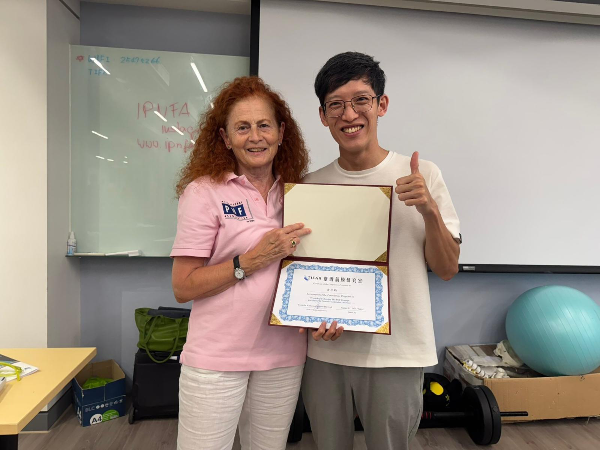
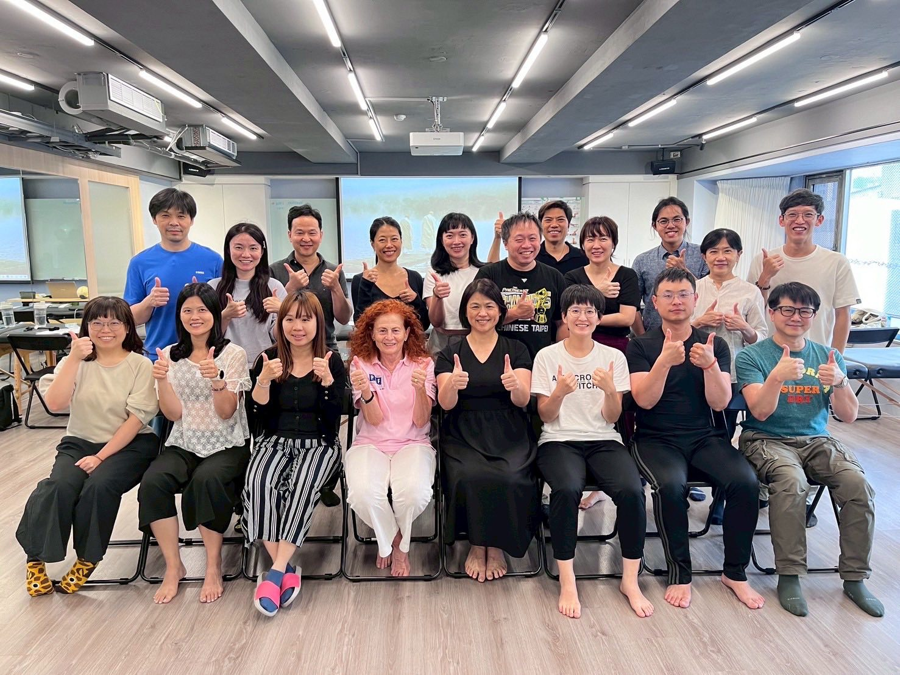
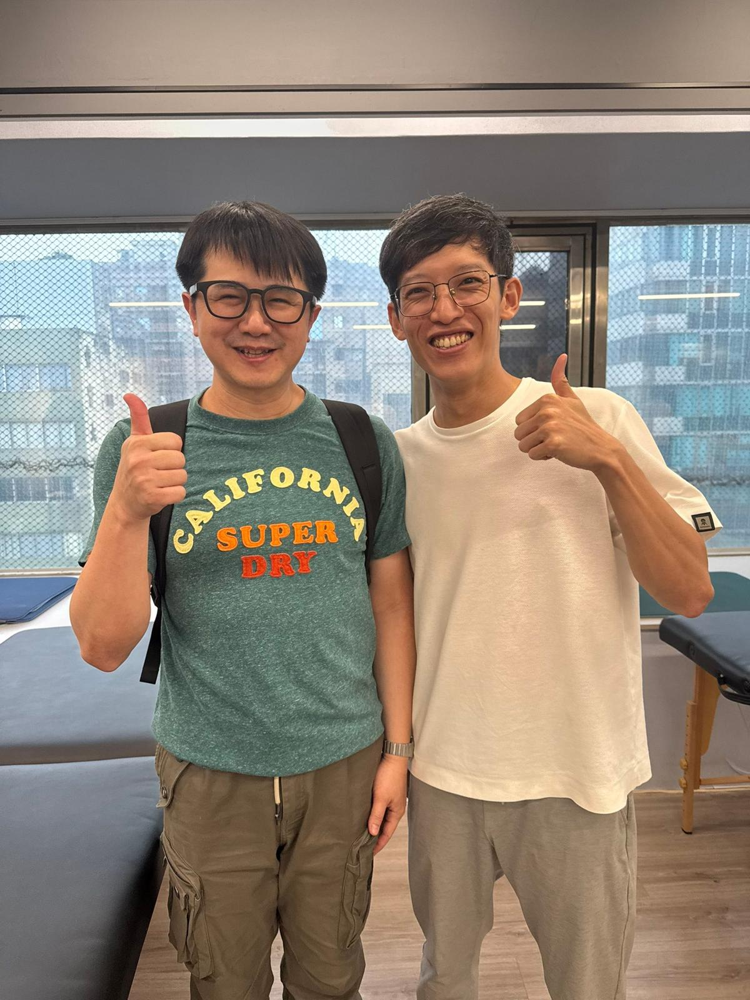
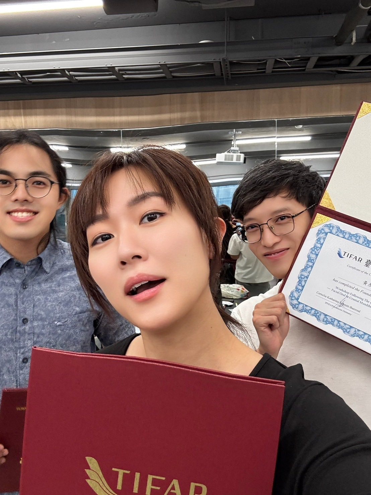
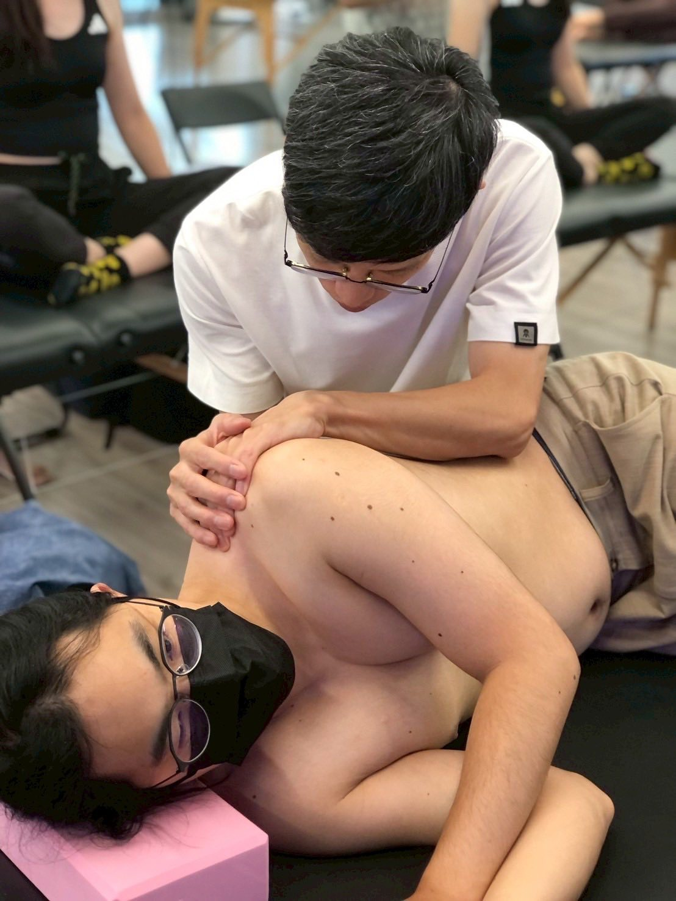
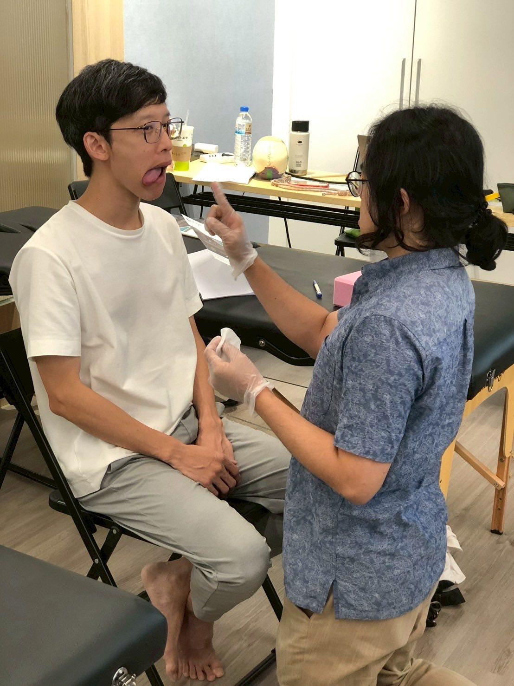
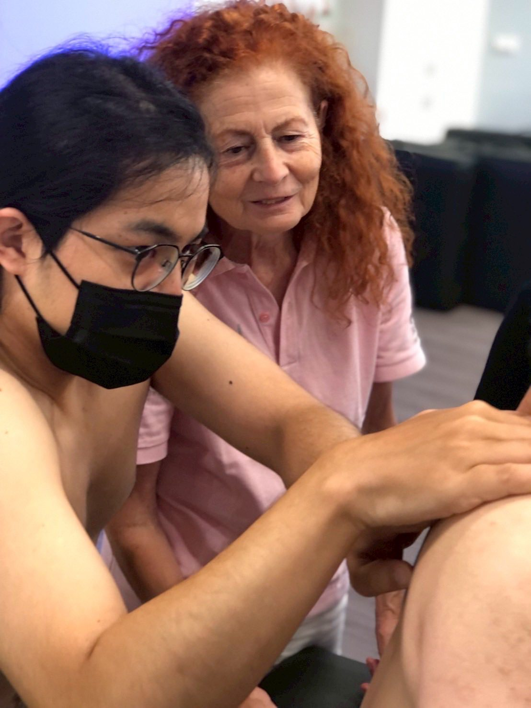
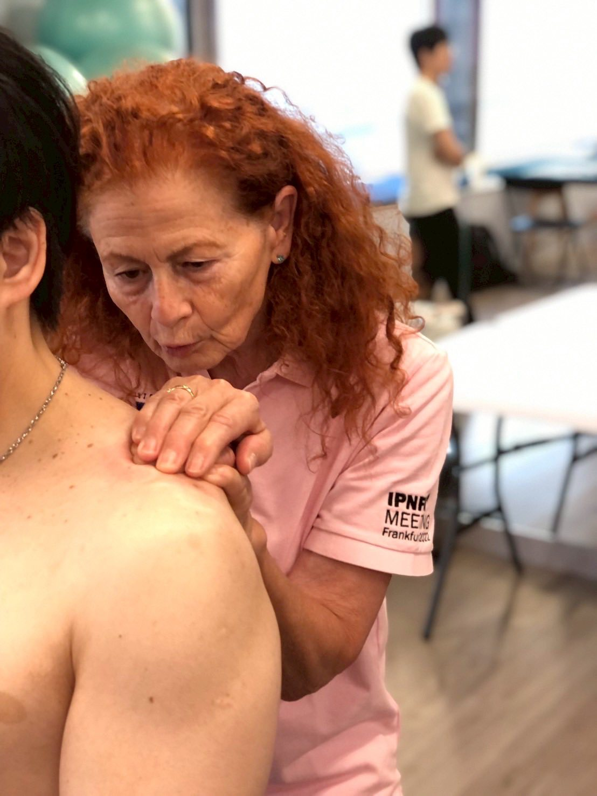
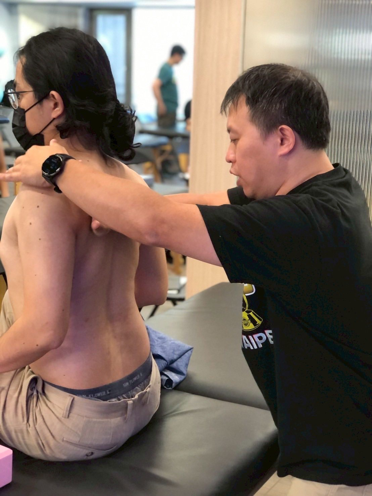

這兩天參加了從德國老師飛來台灣的官方正式PNF的工作坊，我只能說，這些厲害的技術…
這兩天參加了從德國老師飛來台灣的官方正式PNF的工作坊，我只能說，這些厲害的技術，還是得親自上過才能知道有多震撼！
光是網路上查資料看影片教學示範，都只是非常小小小的一部分，很容易以偏概全，以為自己懂了、會了、啊就這樣啊，但事實完全還差的很遠！
這次主題是臉部與顳顎，但學習重點完全不在局部，而是著重全身大結構下手，從肩胛骨、髂骨的活動度開始解，才能真正解決到頭面部與顳顎的問題！
PNF其實是一個顧及全面、考量很完整的一種本體感覺神經促進技術，主要在刺激、促進弱化調到神經連結，如果學會了又很會用，真的不得了！ 弱化的神經連結能靠徒手技巧喚醒，真的是厲害！
從老師的教學帶領過程完全可以體會其「嚴謹」的治學態度，一直被老師盯👀，只要一個走神，老師直接過來笑著看你說：有什麼問題問我，趕快動手練習，不要一直討論！
當下也被老師當麻豆示範操作，輕輕做一個胸腔直接打開，呼吸順暢，還長高1cm，真的太震撼了！實在厲害，未來有機會一定要去報完整的10天訓練課程！
當然班上又是一堆神等級的老師們當同學，有傅士豪老師、劉育銓老師，還有一堆臨床經驗豐富的PT、OT甚至也有瑜伽老師，大家都好認真！真的是嚇鼠寶寶了😅😅😅
#PNF工作坊
#期待11月！








